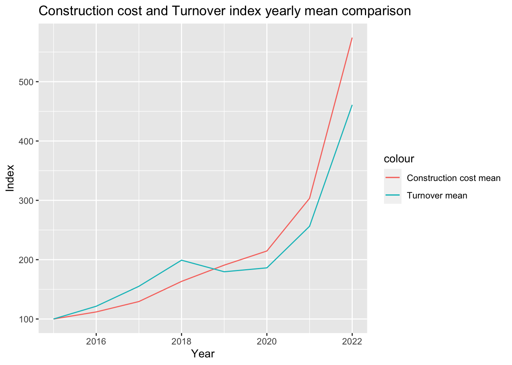

library(tidyverse)
library(dplyr)
library(readxl)
library(lubridate)
library(tidyr)
library(zoo)
library(janitor)
library(reactable)
library(data.table)3 Exploratory Data Analysis
3.1 Necessary libraries
3.2 Importing data
We are importing construction cost index, Turnover rate, usd to tl exchange rate, House sales to foreigners data sets, ……………… .
ConsIndex <- readRDS("~/GitHub/mef06g-honey-drip/Datards/ConsIndex.rds")
Turnover <- readRDS("~/GitHub/mef06g-honey-drip/Datards/Turnover.rds")
House_sales_to_foreigners_month <- readRDS("~/GitHub/mef06g-honey-drip/Datards/House_sales_to_foreigners_month.rds")
House_sales_to_foreigners_year <- readRDS("~/GitHub/mef06g-honey-drip/Datards/House_sales_to_foreigners_year.rds")
monthly_usd_to_try <- read_excel("data/monthly_usd_to_try.xls")
monthly_usd_to_try$month <- as.Date(monthly_usd_to_try$month)
monthly_usd_to_try$month <- format(monthly_usd_to_try$month,"%Y-%b-%d")ggplot(House_sales_to_foreigners_year, aes(Year)) +
geom_line(aes(y = Total, colour = "Total")) +
geom_line(aes(y = `Sales to foreigners`, colour = "Sales To Foreigners"))
total_sale2021 = House_sales_to_foreigners_year %>% select(`Total`) %>% filter(House_sales_to_foreigners_year$Year == 2021)
total_sale2022 = House_sales_to_foreigners_year %>% select(`Total`) %>% filter(House_sales_to_foreigners_year$Year == 2022)
1- (total_sale2022 / total_sale2021) Total
1 0.2225436"Between 2021 and 2022 there is % 22.25 decrease in total sales but when we look to foreign share it increse in terms of percentages"[1] "Between 2021 and 2022 there is % 22.25 decrease in total sales but when we look to foreign share it increse in terms of percentages""Finding construction cost index yearly mean to compare"[1] "Finding construction cost index yearly mean to compare"ConsIndexYear <- ConsIndex %>% group_by(Year) %>% summarise(Construction_cost_mean = mean(index, na.rm = TRUE))
TurnoverYear <- Turnover %>% group_by(Year) %>% summarise(Turnover_mean = mean(`seasonal and calendar adjusted
Index`))
ConsIndexYear %>% left_join(TurnoverYear, by = "Year") %>% ggplot(aes(Year)) +
geom_line(aes(y = Construction_cost_mean, colour = "Construction cost mean")) +
geom_line(aes(y = Turnover_mean, colour = "Turnover mean"))+
labs(title="Construction cost and Turnover index yearly mean comparison")+
xlab("Year") +
ylab("Index")
"USD to TL Exchange rate"[1] "USD to TL Exchange rate"ggplot(monthly_usd_to_try, aes(x = `month`, y = `usd_rate`, group = 1)) +
geom_line(linetype="solid", color="red", size=2) +
scale_x_discrete(guide = guide_axis(check.overlap = TRUE))+
labs(title="USD to TL Exchange rate")+
xlab("Year") +
ylab("Xrate")